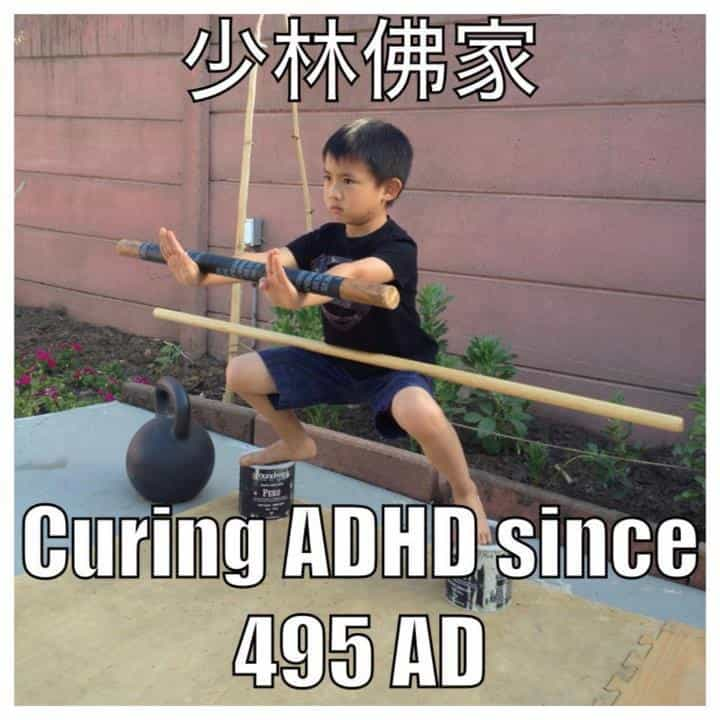
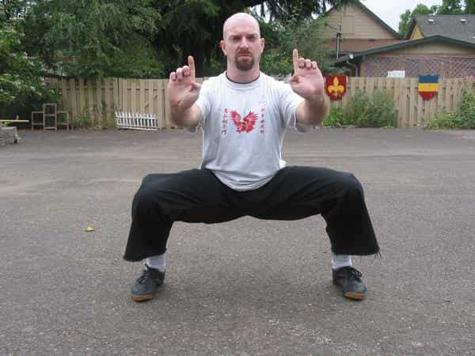
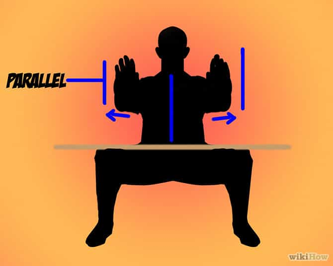
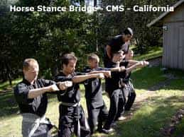
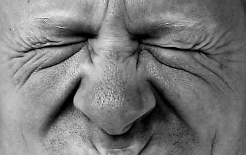

< < < Back
The Physical Exercise That Strengthens The Mind – Return Of Kings

There are far too many articles on ROK about exercises that benefit the body to count, but very few that address exercises that benefit the mind. In a world where constant mental distractions are the norm, the mind needs to be strong enough to filter these meaningless distractions out. However, instead we live in a world where people are losing the fight against these distractions.
There are many different ways to strengthen the mind such as traveling and seeing more of the world. However, for the ROK readers who don’t have several thousand dollars and a few months of vacation time that is sitting around unused, there are cheaper ways. In fact unless you are in a wheelchair you have all the tools you need to do it from right where you are sitting in front of your computer.
Introducing the horse stance. It is a core exercise found in many Chinese martial arts. I am told not to give away any of the secrets of my kung fu school to the public, but I recently found out that horse stance is one of the basic stances in almost all yoga classes so apparently the secret is already out.
To do it put your legs about one and a half to two shoulder widths apart. Try to keep your toes pointed forward as best you can. Then keeping your back straight and perpendicular to the ground squat down until your thighs are parallel to the ground with your knees pointing out to the side. Before doing it read the part below on proper form to prevent knee problems. Hold this stance for as long as you can.

That is it. A good exercise should be simple and hard and this falls to the extremes of both. Every person’s body is different so some people will struggle to hold it for 30 seconds. Among the 40,000 or so unique visitors to ROK every day there will be someone who has no trouble holding a perfect horse stance for five minutes even though they have never done it before. Good for you, please keep it to yourself.
Proper Form Prevents Injuries
This exercise will work many of the same muscles as the squat workout done at a gym. However, the form is different. The proper form for a squat workout involves the feet about shoulder width apart, knees pointed forward, and your hips go back when you go down. If you try to do horse stance with this form you will tear up your knees over time. When doing the horse stance your feet should be much wider apart, your knees should point outward, and your hips should remain forward. Both are good workouts, but they are not different variations of the same workout.
Due to lack of flexibility and being beginners most of you will not be able to make your form exactly the way I describe. I have been doing it for a long time (off and on) and even my horse stance form isn’t perfect either.

The most important things to do to prevent knee problems is to make sure that your knees are pushed outward and never sink so low in horse stance that your butt is below your knees. To help get your knees out as much as possible do the butterfly stretch before you practice and don’t wear tight pants. To make sure that you are squatted the right amount find a bo staff, broom, rake, or shovel around your house that has a round handle. Balance it across your legs and make sure you are squatted down enough that it doesn’t roll off the front of your knees or roll back toward your body.
The most important thing to do in order to get the most benefit from this workout is to make sure your thighs are parallel to the ground. Again balancing a broom across the top of your thighs as described above is the best way to make sure you are doing it right. A high horse stance is a red flag for a McDojo in the martial arts world.

When I see something like this I feel the same way a weight lifter at the gym feels when they see someone violently rocking their body back and forth while doing a bicep curl.
Mental Discipline
The longer you hold the horse stance the more your legs will burn and burn. The burn will make your mind go into overdrive to rationalize excuses for why it is OK to give up and stop the burn. For me this generally starts after about three minutes into a five minute workout. To block it out I might try to close my eyes and relax despite the burn. Then I open them to see how much longer I have to endure the burn and see that only 40 seconds of burn have gone by. My legs are already burning and it will be another minute and twenty seconds of even greater burn before the burning stops.
BUT WAIT… My eyes were closed that whole time. What if it was actually a minute and 40 seconds that went by. I know that it wasn’t but…
“It could have been.”
“You have been getting better.”
“Just feel how much your legs burn.”
“And then you would only have 20 seconds more.”
“It was definitely a minute forty.”
“And even if wasn’t four minutes is still good.”
“NO, four minutes is FUCKING AWESOME.”
“Most people in the world can’t do three minutes.”
“No one would blame you.”
All of a sudden you see that eighteen seconds have gone by and you have two seconds to make a choice. Do you give in or do you push back against those voices and do what you know you need to in order to make yourself the man that you want to be.

Self Defense Application
Being able to withstand pain is important in a fight. You won’t be able to block every punch and when one gets through your defenses you have to be able to shake it off immediately or get knocked out by the upcoming follow-up strike. You also have to have the speed and power to make it through your opponents defenses. Horse stance makes your leg muscles incredibly strong and your kicks as strong as a horse’s.
In the rise of fake martial arts schools across the country one of the responses to it has been the rise in instructors that do away with the art in martial arts and give only advice that they feel is 100% practical. While there is a lot of value in what they teach some of what they teach goes against what has worked for thousands of years before they were born. One of the most common pieces of advice from the practical self defense gurus is to just kick a person in the knee. The knees are a weak point and easy to break in the average person.
However, as a person gets better at horse stance the muscles and connective tissue in that person’s leg get stronger. Once he is able to hold horse stance for about an hour at one time his legs will be strong enough to hold against a side kick to the knee unless the opponent also practices horse stance. Since a lot of people get their fighting advice from practical fighting instructors, putting some horse stance into your workout regimen could save you a lot in reconstructrive knee surgery in the future.
Read Next: Bodybuilding vs. Building Your Body


{kind=link}
{kind=link}
{kind=link}
{kind=link}
{kind=link}
{kind=link}